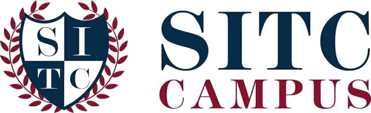
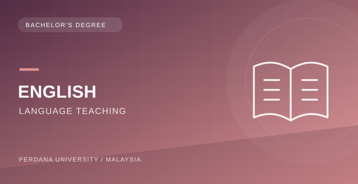
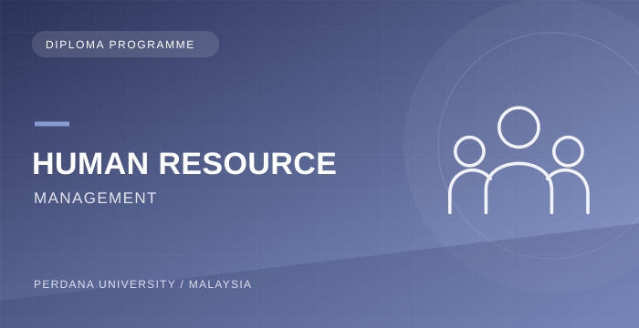
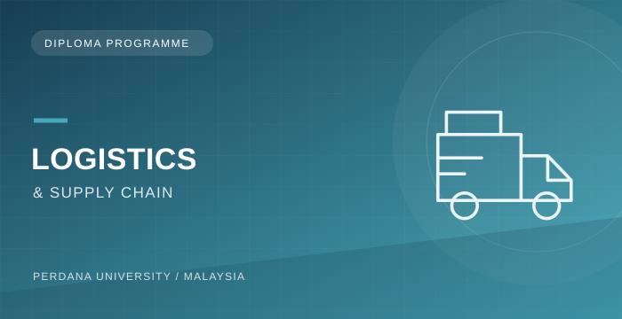
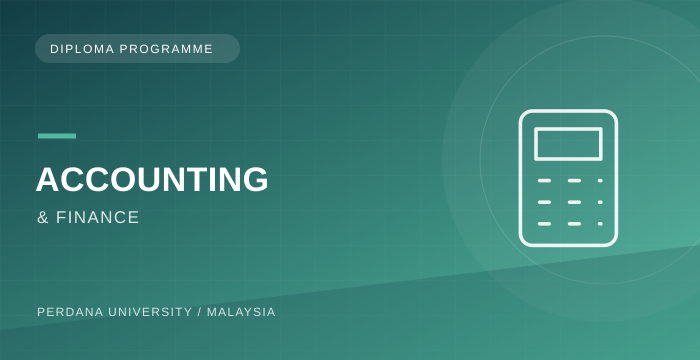
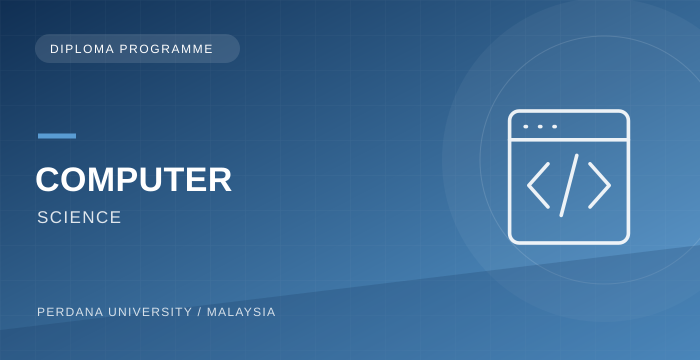

Study in Malaysia
Experience campus life and discover international learning opportunities in Malaysia.
Explore Malaysia Programmes →
Your next chapter starts hereExplore your international education journey through SITC Campus — your local admissions support team.
Two flexible ways to explore your education goals.
Experience campus life and discover international learning opportunities in Malaysia.
Explore Malaysia Programmes →Explore online learning pathways from Sri Lanka with flexible study options.
Explore Online Programmes →Ask our counsellors about current scholarship opportunities and eligibility.
Check Eligibility →Your next chapter begins in Malaysia!
Dreaming of studying abroad? Explore diploma and bachelor’s programmes at Perdana University, Malaysia, with guidance from SITC Campus.
Explore six degree pathways and speak to SITC about entry requirements and credit transfer.
Build your future in information technology.
Explore your next step in business and management.
Take the next step towards a future in accounting.
Explore the science of human behaviour.
Bring together your interests in counselling and psychology.

Turn your passion for English into a teaching pathway.
Considering your next step after O/Ls? Ask about entry requirements for these seven diploma programmes.

Explore people management and the world of work.

Discover logistics, operations and supply chains.

Start building your knowledge of accounting.
Explore brands, audiences and digital marketing.
Begin your journey in business studies.
Explore your creativity through media production.

Start your journey into computing and technology.
Admission and credit transfer are subject to university assessment. Confirm current entry requirements, fees and intake availability with SITC. PDF brochures open on Perdana University’s official website.
Meet the people behind your future learning journey.
Four simple steps from consultation to enrolment.
Tell us about your study goals and receive guidance.
Discuss suitable programmes and available intakes.
Get support with the admissions process.
Begin your confirmed study pathway.
Tell us a little about yourself and an SITC counsellor will contact you on WhatsApp.
Please confirm the relevant recognition and accreditation details with SITC for your selected programme.
Fees vary by programme and intake. Request an approved fee breakdown from an SITC counsellor.
Ask SITC which Perdana programmes currently offer online (ODL) options.
Visa requirements and timelines depend on the programme and applicant. SITC can explain the current process.
Scholarships are subject to programme-specific eligibility, availability and approved terms.
SITC can discuss consultation, programme selection and the admissions process.
Speak to SITC about studying in Malaysia or online.